来源：https://g6oie6h368.feishu.cn/docx/MwIYdeZNio8bWUxAEGCcOhO2nlc
大家好，我是清欢~
最近在做短剧cps项目，目前做了将近1个月，变现1w＋。
发了40多个视频，爆了十几个，视频发布比和爆款产出比将近2:1，
也就是说基本上发2-3个视频，就有一个爆款产生。
秉着越分享越幸运的原则，今天来分享一下我的实操经验，
希望对想入局的小伙伴有些启发。
视频发布第二天，看收益后台竟然已经充值了49元，但是当时我的视频播放量才600多！
说实话，这转化真的震惊到我了，而且这个不是个例，
很多一起做短剧的小伙伴也大多都是几千播基本就能出单。
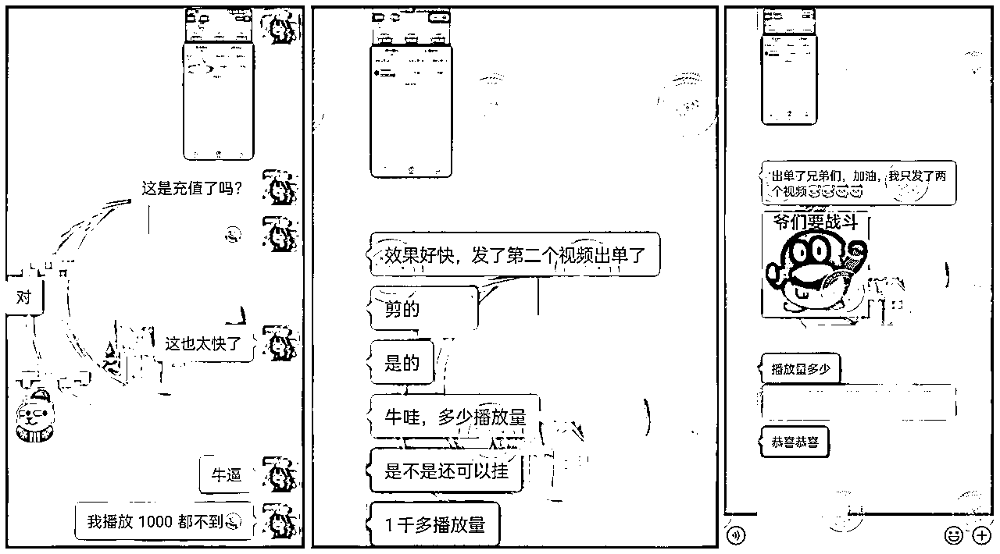
我觉得这个数据有些异常，转化速度超出预期很大，于是去巨量算数搜索验证，
数据如下：内容分低，搜索分高，供不应求，并持续增长，
说明了什么，说明了这是妥妥的蓝海期啊！
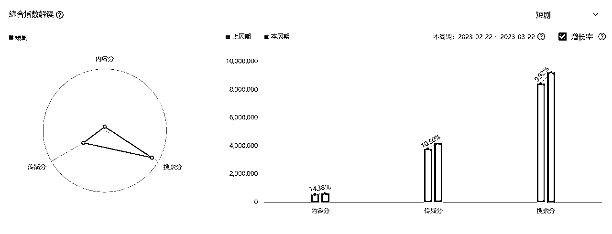
由于之前做小说推文，有些手机号被占用了，于是我开始办卡，注册新的账号，
3个账号同时启动，目前发了20多天，充值2w＋
40多个视频，爆了将近20个，爆款产出比很高，
而且因为精力问题，我一个号每天基本就发一个视频，
如果精力多的人用来做矩阵，效果可想而知。
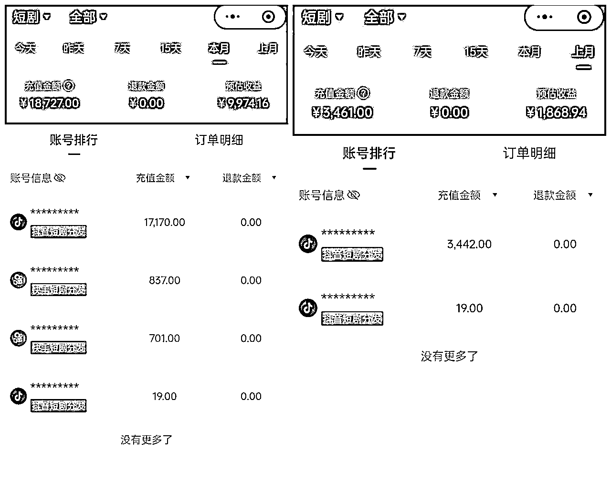
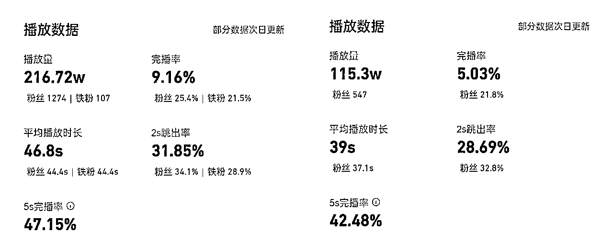
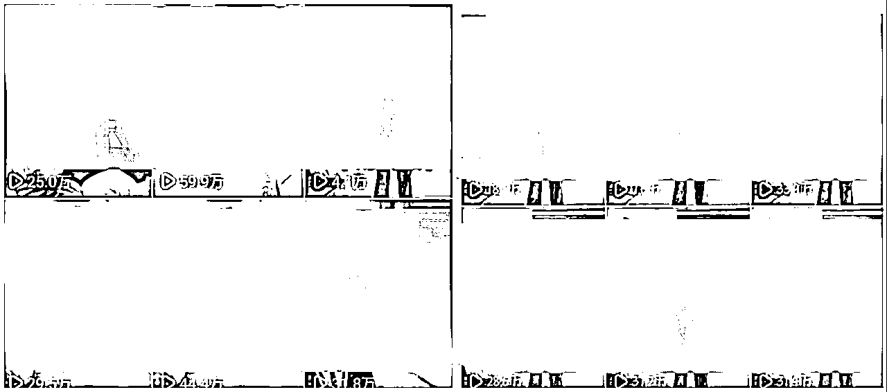
那么短剧推广项目到底该如何做呢，下面分享项目介绍以及实操流程
短剧就是有专门的团队，把一些热门小说拍成电视剧，大多是虐文和爽文改编。
一部剧大概100集左右，每集1-3分钟左右，一般10集后开始收费观看，我们赚的就是付费佣金。
这些团队拍好视频后，会把短剧版权派给各大平台，比如抖音、快手。
我们找平台拿授权渠道后，就可以开始剪辑剧情，
然后在抖音，快手上发视频，挂载短剧小程序，
链接在视频的左下角，充值相当丝滑，
有人通过我们的视频链接下单，
充值看后续，我们就能获得相应的佣金收益。
佣金在50%左右，如果他们想看完整部剧，
不花个几百块是拿不下的，
很多人甚至会直接充值一年的会员。
我们剪辑属于二创剪辑，需要自己再加工，
剧情一般剪辑到高潮部分就卡住，拿捏住用户好奇的心理，
引导他们去小程序看后续，
和小说推文项目里，在剧情高潮处掐断是同样的道理。
平台会提供很多剧场的短剧供我们剪辑，并且会不断的更新最新的短剧，
完全不用担心短剧不够剪，自己根据喜好或者抖音上最近的爆款短剧去剪辑就好。
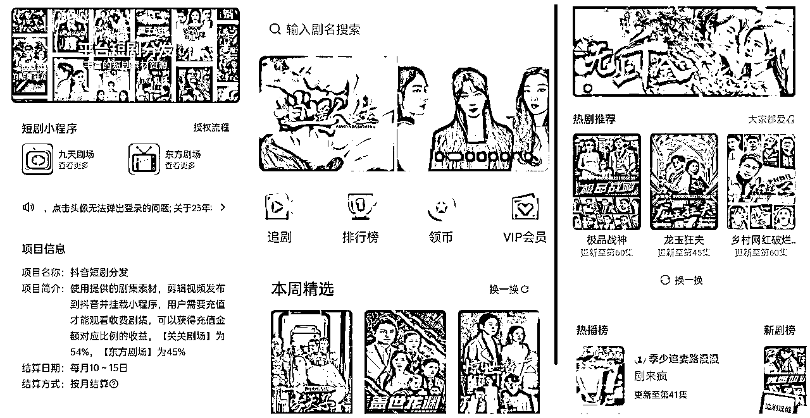
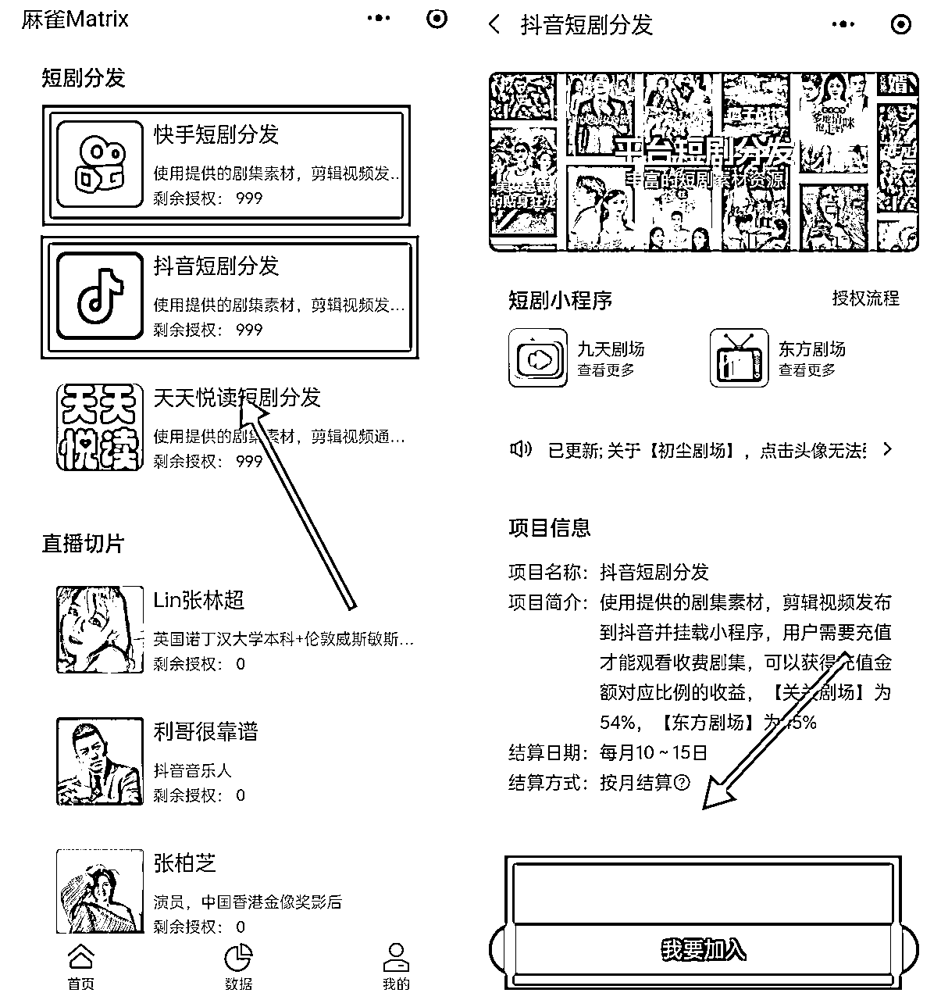
抖音账号一定要用新号注册，
没有新抖音账号的，可以在淘宝搜抖音换绑，10元左右能搞定，
老号被释放出来后，重新注册抖音，这样可以节约注销要等7天的时间成本。
抖音账号需要养号2-3天再发布视频比较好，
养号很简单，每天刷2-3小时视频或者直播，
没时间刷视频的，找个直播把手机放在一边就可以，
刷视频过程中正常点赞关注即可，
不用特意刷短剧方面的视频，让抖音知道你是个正常人在看抖音即可。
短剧账号头像，昵称和简介设置，可以找抖音同行进行参考，这个影响不大，不要在这上面浪费太多精力。
建议：
头像：在小红书上直接搜好看的女生头像，或者比较有趣，可爱的头像等等都可以，图片要高清。
昵称：这个网上直接搜好听的昵称，有很多，按照自己喜好选择，一般3-4个字比较好，昵称里不需要带上短剧2个字，当然想带也可以，不影响。
简介：积极向上正能量不违规的句子就可以，可以百度或者小红书上直接搜索正能量句子，直接拿来用。
快手最好也用新号，快手旧号可以直接注销，当天就能重新注册，不用像抖音账号注销一样需要等待7天。
账号注册并授权好之后，开始下载视频进行剪辑，用平台提供的短剧下载链接，进行下载。
直接从百度网盘下载到本地就可以了，可以在拼夕夕上搜索短期的网盘会员，
很便宜，能提升下载速度，节约下载时间。
由于短剧推广需要二创，不能发完整的剧集，需要我们再次剪辑并适当去重，
剪辑软件用剪映，我们把下载好的视频导入剪映进行操作。
去重手法有很多，市面上能搜索到的剪辑去重手法完全够用，
因为短剧对去重要求不像小说推文混剪素材那样高，星球里面也有很多大佬分享过，可以自行搜索下。
我这里分享一下我的剪辑思路和一般会用到的去重步骤，
基本上没有很复杂难操作的步骤，
完全不懂剪辑的小白也可以通过简单的学习轻松上手。
我们剪辑一部短剧之前可以问一下最近在做的小伙伴，哪部剧比较火热，转化比较好，
或者自己看到这个剧名很感兴趣，就可以去抖音上先搜索一下这个剧名，
看一下点赞量比较高的视频是如何剪辑的。
以搜索顾少的隐婚罪妻这部剧为例，搜索方式如下图，
像这种点赞有成千上万个的，都是被市场验证过的爆款短剧，可以放心选择，
然后我们可以参考爆款视频进行剪辑，一般可以参考爆款的开头和结尾，直接一比一拿来用，中间剧情可以适当调整和改变。
确定好要剪辑的短剧之后，我们把下载好的短剧导入剪映。
没有使用过电脑剪映的，电脑下载一下：剪映专业版，
网址：https://www.capcut.cn/（或者直接浏览器搜索剪映专业版，很容易找到）
视频导入剪映后我们先花1-2个小时大致看一下剧情，
磨刀不误砍柴工，如果自己都不知道剧情发生了什么，
很难剪辑出吸引人的视频，因为剧情会很零碎，
这个应该也是我虽然剪辑视频技术不太好，但爆款率却相对较高的原因之一了。
剧情看完之后，我们也能知道目前抖音上的爆款的开头和结尾大概在多少集什么位置了，
直接找到并剪辑出来，然后根据自己看到的剧情把引起自己情绪点的剧情加在中间，
平淡的剧情直接舍弃，一个小片段大概保留10-20秒左右的剧情，
完整的一个视频大概保留4-8分钟左右，根据剧情走向和自己剪辑思路来看，剧情很精彩的可以适当剪辑长一点。
情绪点剧情有：愤怒，吃惊，暧昧，争执，雷人，狗血，误会等等
这里分享一些我常用的剪辑去重手法，比较基础，小白也能很快上手并且安全过审。（去重技术比较好的可以直接略过这部分）
去重步骤：（附图片）
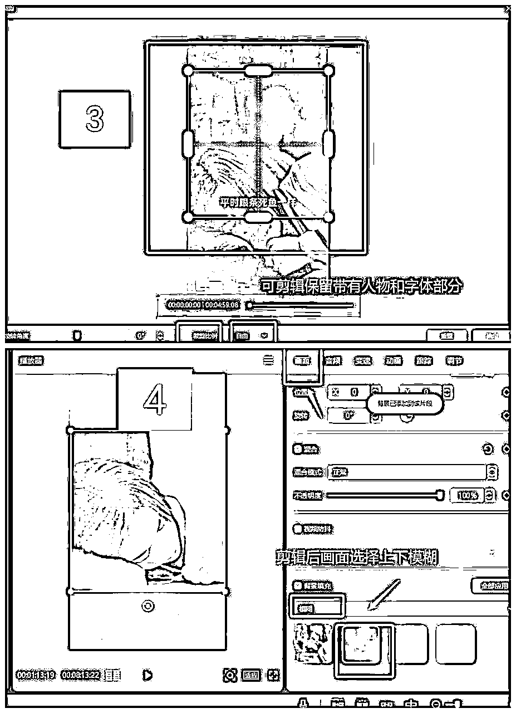
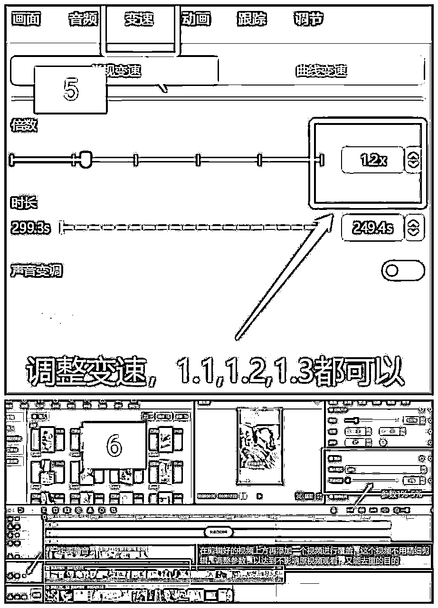
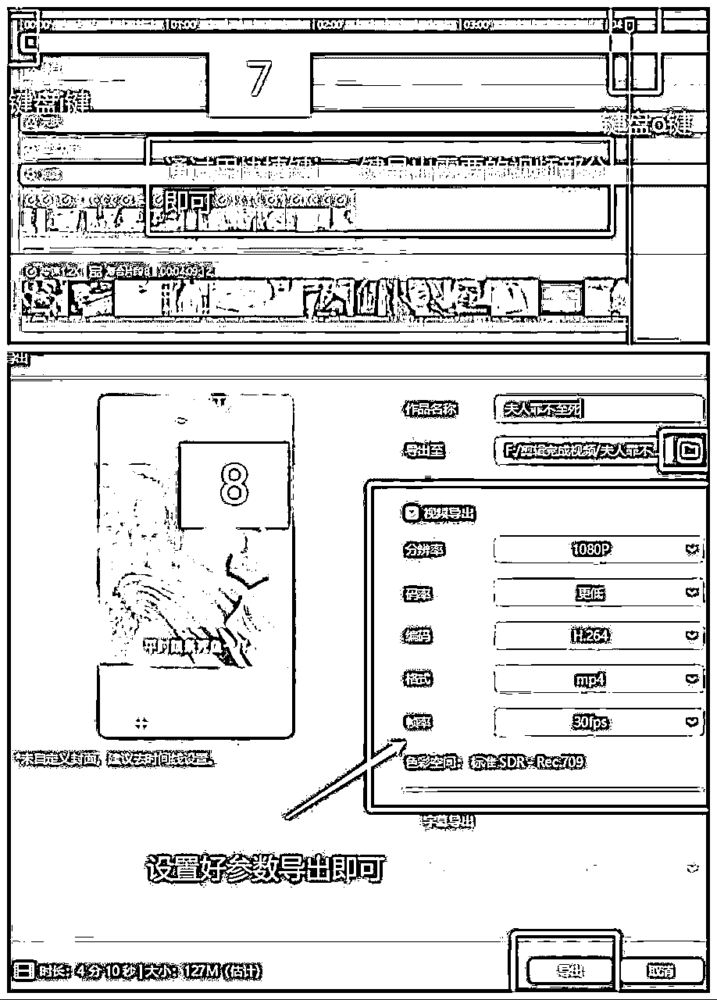
方法1：
一个新剧，先大致看一下短剧整体剧情，去抖音看一下该剧点赞较高的视频是什么样的，
接着对重要剧情进行切片处理，一般选2-3个固定的开头和结尾，
中间冲突部分，剪辑出20-30个左右，
通过快捷键i,o,键分段导出，然后放入不同的文件夹，
刚开始操作会有点麻烦，但是后面再次剪辑会省很多事情。
方法2：
第一次剪辑完成一个视频后，直接把视频分开头，中间1，中间2，中间n ...结尾，
利用快捷键i,o导出，大概会有6-7个片段剧情被导出，
第二次剪辑时，直接把开头和部分中间剧情拿来用，然后加入新的剪辑剧情，结尾等
然后再把新加入的剧情利用i,o键再次导出，会有3-4个片段被导出
如此重复3-4次后，就能获得20-30个左右的视频片段
后面再剪辑基本上不用再添加新的剧情了
可以通过，增加，减少，调整，调换不同剧情的视频片段或者顺序等，
做到快速产出，
当然，也不能随机排放，还要注意剧情的连贯性，
不然观众看的时候跳出率过高，会影响整体视频播放量。
视频做好之后，用手机在抖音和快手平台挂载剧场小程序发布，
同时视频评论区可以放图片置顶引导
用户想要看全集直接点击小程序链接就能进入，非常丝滑，
充值也是在小程序内，
用户充值后我们就能在自己后台看到收益，数据更新很快。
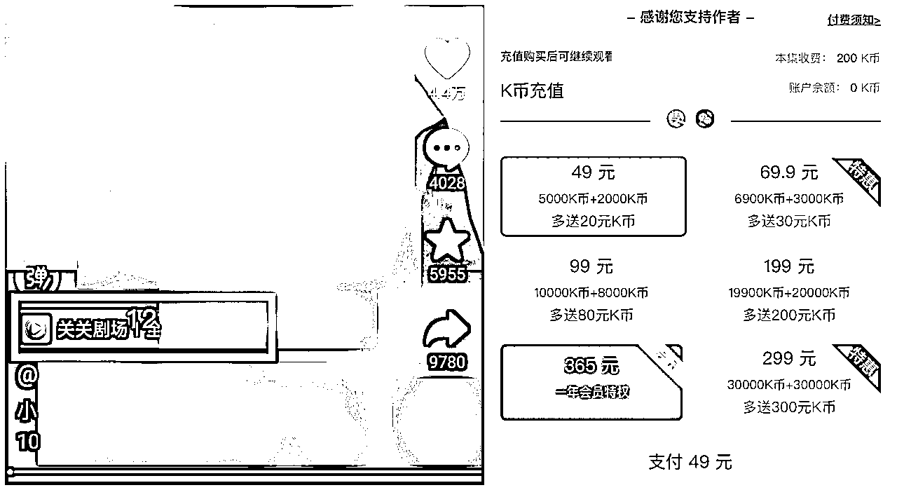
注意: 一部爆款剧可以剪辑10-20个视频以上，只要保证视频剧情不要连贯即可（剧情连贯会影响充值），
视频播放量低的可以慢慢隐藏掉，一般发前3-5个视频流量不会太高，要做好心理准备。
目前短剧基本上利用的都是自然流量，不用投流，
当然对投流感兴趣的也可以试试看看，
女频：人群年龄一般是31-40岁，女性
建议4-8分钟，根据你的故事决定时长，故事足够精彩可以适当延长。
账号流量正常的情况下，不加解说视频依旧可以达到很高的播放量，
当然，有影视解说基础或者感兴趣也可以尝试，加了解说能更好解决原创度低的问题。
2-3个都可，可根据自己时间适当调整，最低保持一天一个。
尽量在下午五点之后，每搁两小时发布一个视频。
晚上11点发视频流量也不会低的，建议多看优秀账号的发布时间，
或者自己可以测试一下不同时间发的流量情况。
(一般5-6点，9-10点，11-12点，流量都还不错)
原因很多：
1、链接没有挂对，只挂了小程序，没有挂到指定的剧集
2、视频结尾或者评论区没有引导
3、连续更新同一部剧也会受到一定影响
4、本身剪辑逻辑的问题，把观众想看的全部都剪进视频了，结尾没有悬念，用户充值欲望不强。
流量低的直接隐藏即可，流量达到20w以上被提示可以按照要求重新剪辑发布，把被提示视频隐藏掉
不是的，手机也可以，当然电脑操作更简单，速度更快，细节更容易把控。
看一下是不是账号流量的问题，账号流量在1000以上就是个人剪辑的问题了
链接掉了大多数是作品违规平台规则了，直接隐藏就好了
自己可以用另一个账号就可以看到，不影响其它人观看
开头：5-10秒
暗示性的台词，
暴力冲突的画面，
男女对戏的画面，
吸引人的台词
中间：矛盾冲突
N个故事合并（集数不用连续），
去除多余画面（配角戏份、平淡的叙事），
节奏紧凑，只保留有冲突的剧情（误会、争执、暧昧等）
结尾：留悬念，
在剧情「高潮、反转、紧张氛围」处掐断，
引导充值——推荐评论区放图片引导
重点：开幕雷击，结局悬念，中间矛盾冲突。
爆文7大要素这里同样适用（金钱数字，性暗示，暴力，死亡，捷径，异常，悬念，民族主义）
目前是项目红利期，市场空间很大，操作难度基本为零，零基础小白也可轻松上手，
感兴趣而且有一些空闲时间的可以尝试，
操作时间也比较自由，可以一次性剪很多集，等用的时候直接发就可以了，
当然哪里都存在二八定律，任何项目都不能保证所有的人都能成功，
不过目前团队里坚持做下来的小伙伴基本都拿到结果了。
感谢阅读，感兴趣的小伙伴欢迎共同交流，一起进步。